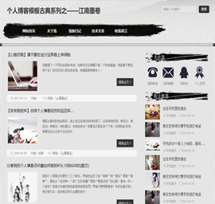

html5个人博客模板主题《心蓝时间轴... Html5+css3个人博客模板，主题《心蓝时间轴》，使用css3技术实现网站动画效果，主要模块是时间轴部分.主题颜色为蓝色.目前版本还在测试当... 下载个人博客模板 个人博客模板古典系列之——江南墨... 一共是四个页面，首页，图文列表，图片列表，文字内容。此模板风格为中国古典风格，山水画墨迹成就一幅江南墨卷。页面首页设计较为简单，... 下载个人博客模板 个人博客《草根寻梦》—手机版模板 把帝国7.0系统升级到最新版本7.2，7.2版本主要是增加了一个多终端的功能，于是琢磨着做一个手机模板出来看看，在现在的模板基础上稍微改动...